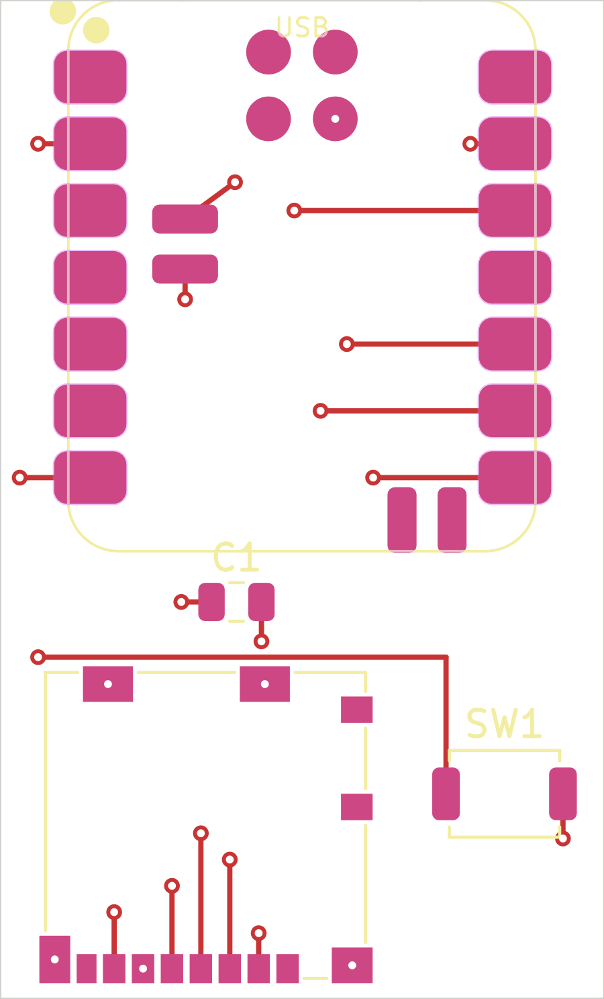
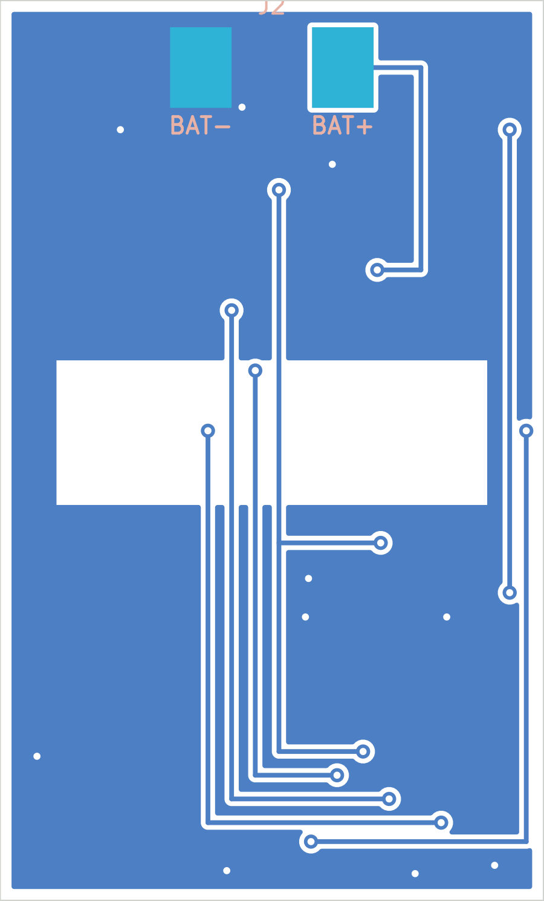
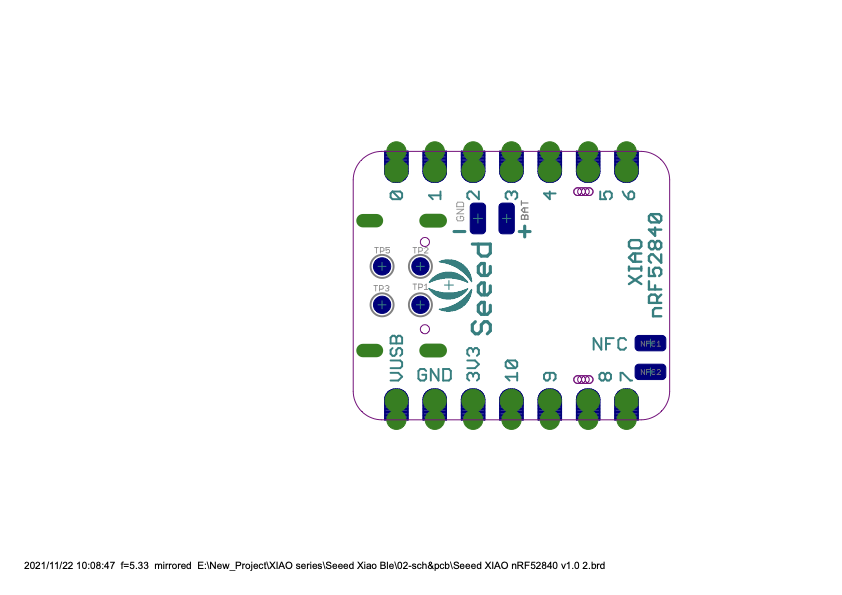

The carrier is a bare 23 × 38 mm board. JLCPCB fabricates the copper.
You mount the XIAO you already have, a microSD socket, one capacitor,
one button, and the cell wires. Read this before you upload anything.
Do not upload the old 30 × 45 mm gerber zip.
That is the other design, the expensive 4-layer board. Order
hardware/openpendant_carrier/openpendant_carrier/output/openpendant_carrier-gerbers.zip.
The KiCad project is
hardware/openpendant_carrier/openpendant_carrier/openpendant_carrier.kicad_pro.
Leave PCB assembly switched off. If assembly is on, you are paying
someone else to place parts, and this page is the wrong plan.
What JLCPCB puts in the package
In the JLCPCB box
Empty boards, usually five
Five is the usual minimum. Each one is a green (or whatever mask
colour you pick) rectangle, 23 mm wide, 38 mm long, 1.6 mm thick.
The pads are already tinned with HASL. The white silk shows
USB, C1,
SW1, and on the back BAT+
and BAT−.
No XIAO, no socket, no capacitor, no button, no battery, no case.
Nothing is soldered. A stencil comes only if you add one to the order.
Not from JLCPCB
The electronics, from you
The board is the wiring. The parts are separate. The XIAO is the
module you already run firmware on. The socket, capacitor, and
button are small parts you buy (LCSC is the easy source, and they
can ride along in the same checkout without being soldered).
The cell is a 1S LiPo, 3.7 V, about 6 × 20 × 30 mm (a 7 × 20 × 25 mm
cell fits the same pads). The case to print is the Orbit O in
hardware/openpendant_carrier/cad/character/.
Read PRINT.txt there.
Parts you have to have on the bench
Part
What to buy
Where it goes
How hard
XIAO nRF52840 Sense
The module you already have. It must be the flat SMD version, with no pin headers.
Front, USB jack hanging off the short edge marked USB.
Edge pins are a normal iron fillet. One pad under the module needs paste or hot air.
microSD socket
Molex 104031-0811 (LCSC C585350). A connector, not a breakout board.
Front, mouth pointing off the end opposite the USB.
Contacts are 1.1 mm apart. Flux, a fine tip, and solder wick.
22 µF capacitor
0805 ceramic, 6.3 V or 10 V, X5R or X7R. No stripe, no polarity.
Front, in the gap between the XIAO and the socket. Silk says C1.
The easy one.
Button
A TS-1088 tactile switch, about 4 × 3 mm, pads 4.45 mm apart. Example: LCSC C720477.
Front, on the right, silk SW1. The Ø6 button from the strip does not fit.
Two pads. Easy.
Cell
Your WLY602030. Red is positive, black is negative. Open wires, no connector.
Two pads on the back, in the open bay at the USB end. The cell body starts above that bay, wire end facing the pads.
An iron. Cut the leads short, strip 2.5 mm, and follow the silk.
Tools: a fine-tip iron, flux gel, 0.5 mm solder, tweezers, solder wick,
and a magnifier. For the one hidden battery pad, solder paste and a
hot-air gun, or a small hot plate. An iron alone cannot reach that pad
once the XIAO is sitting on it.
Settings to use when you do order
Board
Layers
2
Size
23 × 38 mm, read from the gerber, do not type a different size
Thickness
1.6 mm
Finish
HASL
Copper
1 oz
Tracks
The board is drawn at 0.2 mm track and 0.2 mm gap, 0.3 mm via drill
Quantity
5
Assembly
Off
Why assembly stays off
You already own a working XIAO. The factory would need a second,
bare one, plus a setup fee, and you would still want to check the
board yourself first. Five bare boards are the cheap experiment.
The hundred-dollar quote was the other board.
A stencil is optional. It only helps if you want to paste the whole
XIAO at once. A syringe of paste on the single hidden pad is enough.
The bare board, from the KiCad design
Both plots are drawn with the USB end at the top of the picture.
When you hold the pendant, that end is the bottom, the end that hangs
down. The card mouth is the other end.

Front copper. Large pads down both sides are the XIAO castellations.
C1 is the capacitor. SW1 is the button, on the right of this plot.
The row of small pads at the bottom of the picture is the SD socket,
which is the top of the pendant.

Back copper, looking at the back. The dark band is a gap in the
ground pour under the XIAO antenna. BAT+ and BAT− are at the USB
end, the top of this picture. Trust the silk on the real board.
Front, turned the way you will solder it
USB at the bottom. You are looking at the component face.
Placement on the front. Left edge, from the top down: D6 D5 D4 D3 D2 D1 D0. Right edge, from the top down: D7 D8 D9 D10 3V3 GND 5V. Leave 5V empty of any wire. Solder the pad anyway so the module is held flat.
How the XIAO actually connects
There is no connector and no header. The XIAO sits flat on the front
pads and you solder its castellations, the little half-holes along
both long edges. Those fillets are the electrical connection for the
SD card, the button, 3.3 V, and ground.
The red pads stick out past the module. Touch the iron there.
The yellow pad is battery positive. It is under the body, so you
tin it before the module goes down.

Bottom of the XIAO, from Seeed’s drawing. The pad marked + is
battery positive. That is the one hidden joint. The pad next to
it is ground, and an edge ground pin already does that job, so
you can leave the underside ground pad unsoldered.
If the XIAO on your strip has pin headers, they have to come off before
it will sit on this board. The carrier has no holes for those pins.
Desolder them, or keep that XIAO on the strip and put a header-free
Sense module on the carrier.
Assembly, in order
Look at a bare board before any solder.
One short edge is marked USB. The SD pads are at the other short edge.
Flip it. Two pads near the USB end are marked BAT+ and BAT−.
If the silk is missing or the outline is not 23 × 38 mm, stop.
Tin battery positive before the XIAO goes down.
On the front, the BAT+ pad is the small rectangle that will sit under
the left half of the module, not the big back-side wire pad.
Put a small dome of solder or a dot of paste on that pad, and tin the
matching + pad on the bottom of the XIAO. Too much solder tilts the module.
Place the XIAO and tack two corners.
Component face up, antenna and mic away from the USB. The USB-C jack
hangs off the USB edge of the board. The castellations should sit
centered on the red pads, the same amount sticking out on the left
and the right. Tack one corner, check, then tack the opposite corner.
Melt the hidden BAT+ joint.
Hot air on that area, or a hot plate under the board, while you press
the module flat with tweezers. You will not see the joint. When it
has cooled, the module should not rock. Later, a meter from the back
BAT+ pad to the XIAO’s BAT+ pad should beep. If it does not, the cell
will not charge and will not power the board.
Solder the fourteen edge pads with the iron.
Flux first, then a small fillet on each castellation. Drag solder is
fine if you wick any bridge. D4 and D5 are the motion sensor and must
stay unconnected to anything except their own pad. 5V stays a pad
with no wire. Solder it only to hold the module.
Capacitor, then button.
C1 is the 0805 between the XIAO and the socket. Either orientation.
SW1 is the button on the right. Two pads, no polarity, button facing up.
The round 6 mm button from the perfboard strip does not fit these pads.
Socket last, so the iron has room.
Metal shell on the front. The mouth and the card guide point off the
top edge, away from the USB. Tack the big shield tabs first so it
cannot shift, then the contact row. 1.1 mm pitch. If two contacts
bridge, flux and wick. Do not scrape the contacts with the iron.
Cell wires on the back, in the open bay.
Back of the board facing you, USB end toward you. The left pad is
BAT+ and the right pad is BAT−, and the silk says so. Turn the cell
so the wires come out of the end nearest those pads. Cut each lead
to about 10 mm, strip 2.5 mm, and lay the bare end flat on the pad.
The insulation sits in the gap between the pad and the cell. It
does not tuck under the cell: there is no room there. Red on the
left, black on the right. Those pads are already connected to the
XIAO. Do not also touch the cell to the 5V pad, and do not add a
separate charger. The charger is the one already on the XIAO.
Back, the way the wires go on
Looking at the back, USB end down. The cell sits above the pads.
Each lead is cut to about 10 mm so it reaches its pad and still has
a small curve in the bay. Read the silk on the board you receive.
If the silk and this drawing disagree, follow the silk.
Check it before you print the case
No cell yet. Plug USB. The XIAO should show up on the computer the same way it does today. The charge LED is the small light by the USB jack.
Meter: back BAT+ to the XIAO BAT+ pad beeps. Back BAT− beeps to a GND castellation. BAT+ does not beep to GND.
Push a microSD in from the top until it seats. The firmware already talks SPI on D6, D7, D8, and D9. The card should mount. Pull to remove. This socket does not click-to-eject.
Then the cell. Red and black as marked. USB should still charge it. Unplug USB and the board should stay on from the cell.
The button is D1, active low. A press should do what the button does on the strip.
The printed shells are a separate job, after this works. Print
character_front.3mf,
character_back.stl, and
character_button_hat.stl from
hardware/openpendant_carrier/cad/character/.
The print settings, snap, USB opening, and chain bail are in
PRINT.txt in that folder. JLCPCB does not make
the case.
The decision, plainly
Easy with an iron
The capacitor, the button, the two cell wires in the back bay, and the XIAO’s edge fillets, if you have flux and a fine tip.
Needs care
The SD socket’s 1.1 mm contacts. Bridges are normal the first time. Wick fixes them. Nothing on this board is a chip you can cook by holding the iron in one place.
The one new skill
Battery positive is a pad you tin, then melt, under the XIAO. If you do not want hot air or a hot plate, do not order yet. Everything else can wait with it.